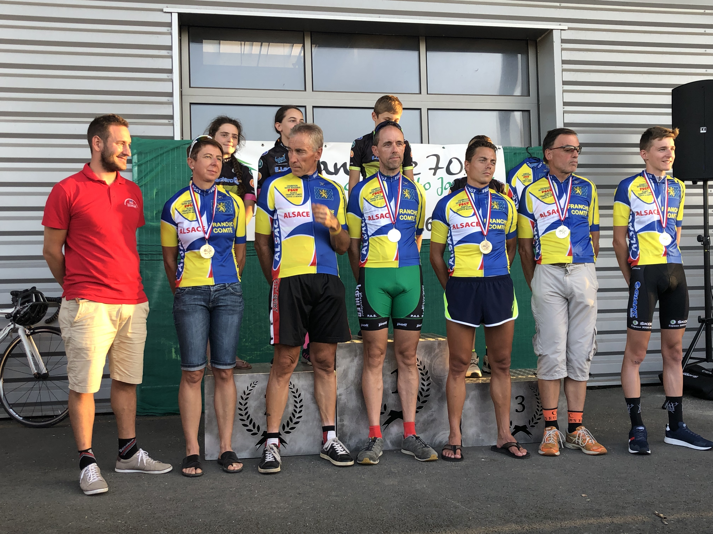
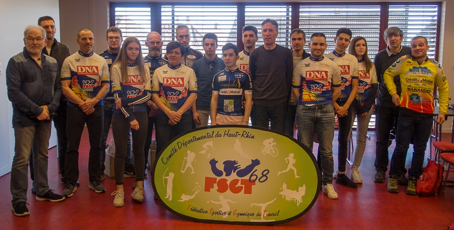
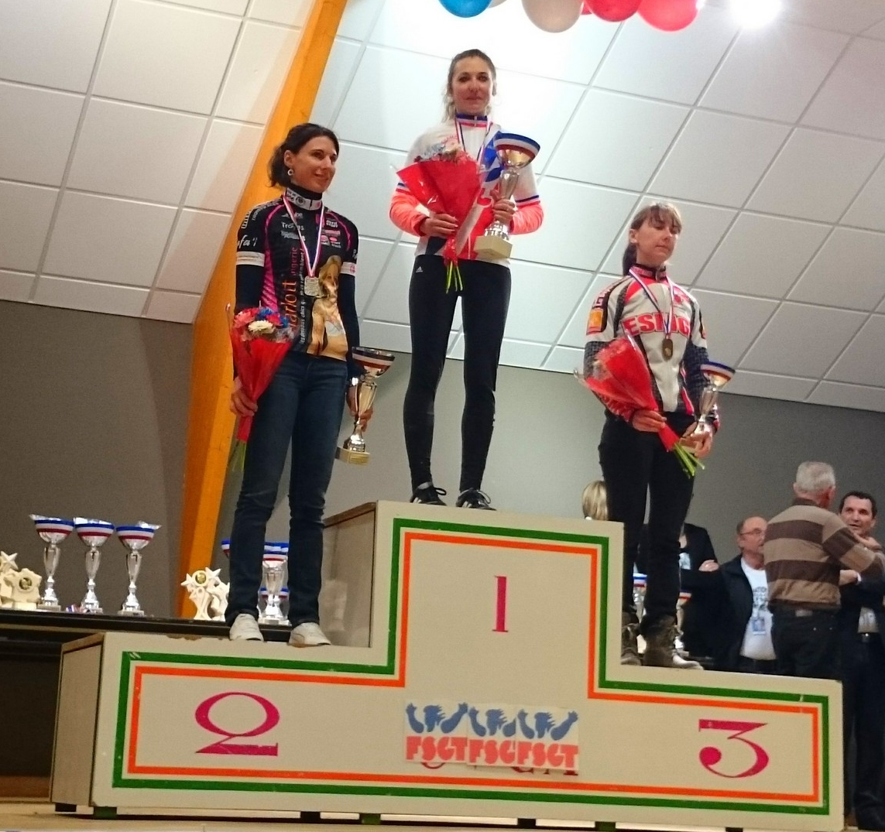

Accessible en cliquant ici !
Championnat Alsace Franche-Comté de Contre-la-montre 2019

--------------------------------
Remise du trophée DNA 2018 (Route, VTT et Grimpées)

-------------------------------
Championnat National Cyclo-Cross à Belleneuve (21)
Trois podiums pour les Alsaciens !
- Mathieu Jelsperger 2ème en juniors
- Quentin Rusch 3ème en espoirs
- Jérémy Bolli 2ème en vétérans
Remise des Trophées Rector' Cup

-------------------------------
Assemblée Générale (Février 2018)

-----------------------------
Le 29 septembre dernier, David Arnoux (CC Etupes) a décroché le record national de l'heure sur piste FSGT.
Au Vélodrome de Granges (Suisse), il a parcouru 46,213 km en 60 minutes,
alors que le record précédent était de 43,512 km (Christophe Morin, 2016).
Le récit et les photos de ce record par le CC Etupes sont accessibles ici.
------------------------------------
Championnat National FSGT de cyclo-cross à Creney-près-Troyes

--------------------------
Championnat national FSGT VTT 2015 à Muhlbach-sur-Munster

----------------------
Assemblée générale
---------------------------
Championnat National route à Andon (Alpes-Maritimes)
--------------------------
----------------------------
Assemblée générale

------------------------------
Championnat National de Cylo-cross à Allonnes

---------------------------
Championnat de cyclo-cross à Kappelen

---------------------------------
Circuit Nord-Essonne

Classement général :
5e - Jacquot Mickael
10e - Brondani Lucas
13e - Kempf Arnaud
19e - Richard Valentin
------------------------------
Championnat national route à La Guiche (Saône et Loire)

--------------------------------------
Tour des Grands Ducs 2013

-------------------------------------
Assemblée générale
----------------------------------------
Championnats nationaux FSGT de cyclo-cross
La délégation Alsacienne en Bretagne:

{kind=link}
Pour revivre les championnats nationaux en photos:
Cliquez ici (Photos de Wendy)
-------------------------------------------
Décision de la Commission régionale:
A partir du 1er janvier 2013, les courses de VTT à partir des cadets sont exclusivement réservées aux licenciés FSGT
(sauf courses mixtes FFC/FSGT)
---------------------------------------------
Les coureurs UFOLEP ne sont plus considérés comme licenciés!
(changement de leurs assurances au niveau de leurs licences)
------------------------------------------
Equipe d'Alsace route au Championnat National

-----------------------------------------
Championnats nationaux de VTT 2012